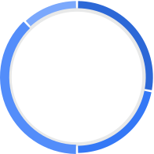

Case study · Design systems · 2026
Interface Design System
Rebuilding a commercial design system three times, as tokens, as React components and as a Figma library, so that one change to a token reaches every surface.
- Role
- Design and build, end to endpaired with Claude on the build
- Type
- Independent studyreference: Infinify DS
- Year
- 2026
- Surfaces
- Tokens · React · Figma
- Scale
- 30 sets · 358 variants3,024 icons in Figma
Primitives
One token source
Roles, not hues
Surfaces
The problem
A showcase shows outcomes, not the reasoning.
Infinify is a polished commercial design system, published as a Behance showcase. A showcase tells you what the buttons look like. It doesn’t tell you why the tokens are layered the way they are, or what breaks when a second theme arrives.
I wanted the reasoning, so I rebuilt it as a working system with one rule: nothing is drawn twice. Colors, spacing, radius, type and shadows start as tokens, and both the website and the Figma file read from them.
One source, three surfaces
A token change has to land in CSS, in React components and in Figma variables, without anyone copying hex codes by hand.
Themes multiply everything
Five palettes and two themes turn every component into ten. The structure has to absorb that, not the variant count.
Figma and CSS disagree quietly
Effects stack in opposite orders and icons scale differently. The mismatches only show up when you build both.
Design questionHow might I rebuild a design system so one token change reaches code and Figma, and a component never needs to know which color it is?
The system
Three layers of color, so a component never names a hue.
Each layer only points at the one below it. A component reads the top layer, so a single attribute recolors it and a theme swap re-resolves everything underneath.
--brand-600. 102 colors, plus spacing, radius, type and 12 shadow levels.--fg-secondary, --bg-tertiary, --border-subtle. 19 roles, resolved per theme.solid, on-solid, tonal, text. Set by data-palette.data-palette="brand" points --p-solid at --brand-600 and --p-text at --brand-700. Same markup, 5 palettes × 2 themes.Decision 01 · Variants
Palette is a mode, not a variant.
In Figma the Button has type, size and state: 80 variants. Adding five palettes as a variant property would have made it 400, and done the same to every other set. Instead, Palette is a variable collection with five modes that point at the theme’s palette roles. Any instance switches palette from the layer panel, and Light/Dark stays independent.
Button variants in Figma
Decision 02 · Contrast
Measure contrast; don’t trust the eye.
Two roles looked fine and measured badly. I fixed them by changing the token, not the component, so every use improved at once. Neither is fully there yet, and I’d rather show that than round it up.
| Role | Change | Before | After | WCAG AA (4.5:1) |
|---|---|---|---|---|
| Tertiary text | mono-500 → 45% mix with mono-600 | 2.81 | 4.48 | Short by 0.02 |
| Avatar initials, dark | Success, Warning: --p-solid → --p-text | 2.29 | 4.28–4.44 | Still short |
| Avatar initials, dark | Brand, Mono, Error: same change | 2.29 | up to 6.28 | Passes |
Decision 03 · Effects
Same shadow tokens, opposite stacking order.
The focus style is two layers: a 1px dark ring and a soft 3px halo. In CSS the first shadow paints on top; in Figma the last one does. Copying the token list verbatim hid the ring in Figma. Reversing the layer order in all twelve effect styles made the library match the browser.
Figma, as first built
The halo painted over the 1px ring, so the focus ring vanished.
Layers reversed
Figma paints the last effect on top, CSS the first. Reordering matched them.
Decision 04 · Icons
Stable names over borrowed ones.
The first icon set was hand-drawn and uneven in weight. I moved to Phosphor (MIT) but kept the system’s own names, so no component changed. In Figma, swapping the geometry inside the existing icon components updated every button, menu and table at once, and the full set ships in Regular and Fill on two extra pages.
System name → Phosphor name
searchmagnifying-glasshomehouseeditpencil-simplesettingsgearclosexmoredots-threeFigma library
Complex components, built only from the parts above.
Every fill, stroke, radius and gap in the Figma file is bound to a variable, and every variable carries its CSS name as code syntax. Each component page has a header and a Light/Dark preview made of real instances.
Total Progress 35%

April 2024
| Family | Sets | Variants |
|---|---|---|
| Button | 1 | 80 |
| Avatar + Gradient | 2 | 72 |
| Checkbox, Radio, Switch | 3 | 35 |
| Input, Select, Text area | 3 | 29 |
| Tooltip + Rich tooltip | 2 | 21 |
| Badge | 1 | 20 |
| Chip | 1 | 15 |
| Menu, Messages, Navigation, Charts | 5 | 13 |
| Data table | 3 | 12 |
| Date picker, Uploader, Progress, Breadcrumbs | 6 | 40 |
| Pagination, Cards, Tabs | 4 | 21 |
Trade-offs
What each call cost
Modesovervariants
Five times fewer variants, but a palette is less discoverable: it lives in the layer panel, not the Assets panel.
Phosphoroverhand-drawn
Consistent weights and 1,512 icons, at about 45 KB gzip more in the bundle until it’s tree-shaken per page.
Centeredoverscaling icons
Each Figma icon is pinned to the center of its 24px frame. Resizing an instance now needs the scale tool.
Rebuildoverimport
Slower than tracing the showcase, but it surfaced every mismatch between Figma and CSS on this page.
Impact
What this work covered
Measuring next
These are counts of what exists, not outcomes. What I’d measure and ship next:
- Close the contrast gaps: tertiary text, Success and Warning initials
- Code Connect, so Dev Mode shows the real React source
- Export tokens in the W3C DTCG format for other tools
- Screenshot tests for every component in both themes
What I learned
A system is the questions it answers
The useful artifact wasn’t a component; it was a habit. Before adding anything, I now ask:
Where does this value come from?
Which layer should change?
Does Figma paint it the same way?
Will it survive a second theme?
Who breaks if I rename it?
Independent study. The original Infinify Design System is by Andy Matviienko and Vladyslav Germash. Component examples on this page are interactive HTML; icons are Phosphor (MIT); component type is Inter.